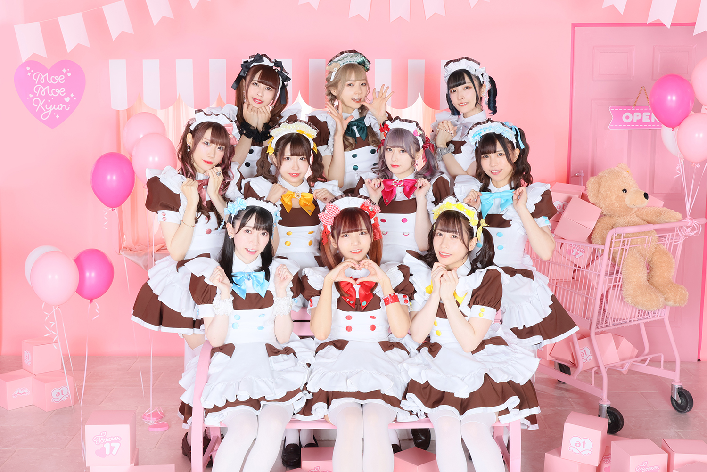
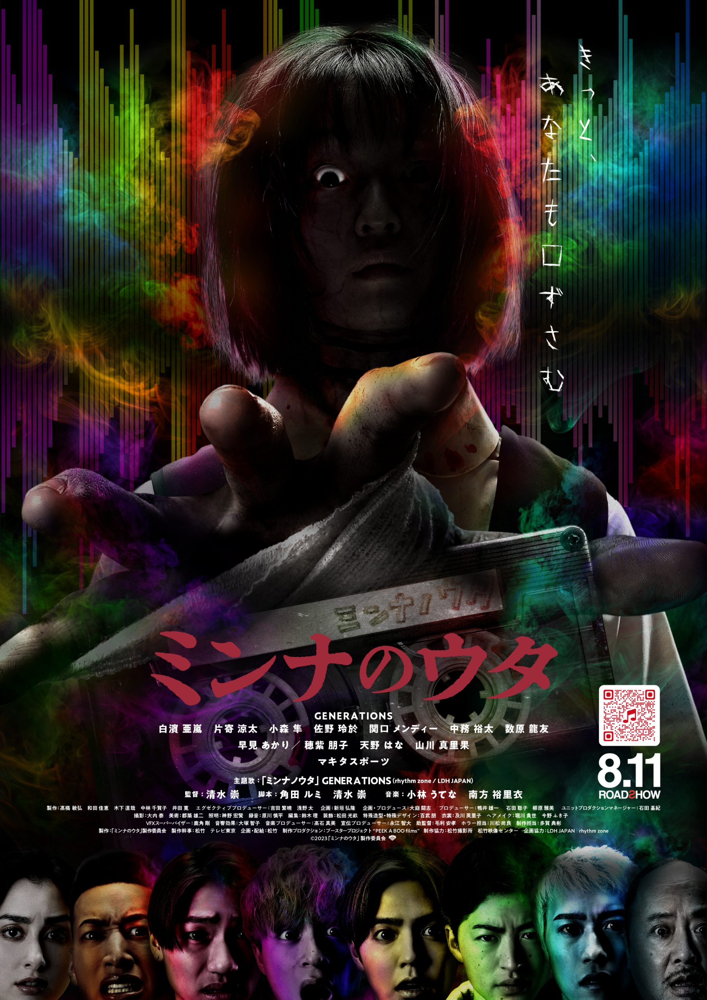
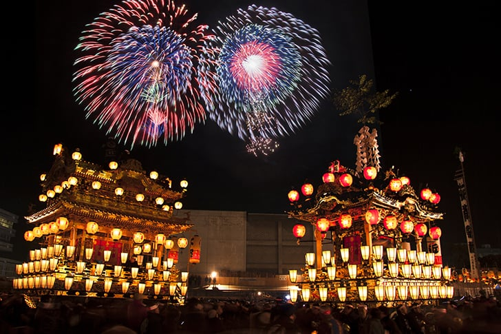
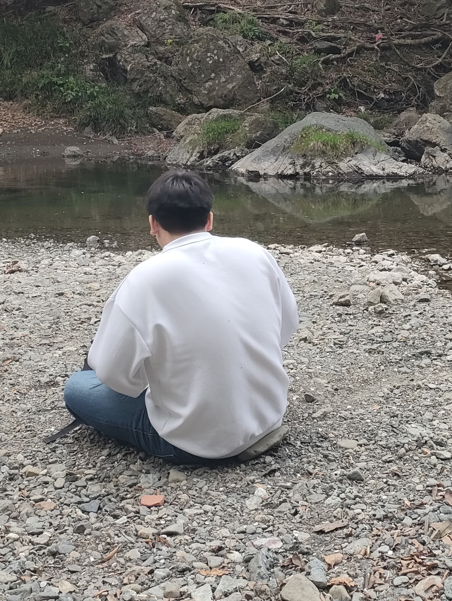

この夏、最高のイベントが始まる
introduction
はじめに
僕は夏に生まれた26歳なので、今年で27回目の夏になる。
27回目になると、夏の価値は薄くなってしまうのだろうか。
いや、そんなことはない。
2023年の夏は一生に一度だし、26歳の夏も一生に一度だから。
特別な夏をもっと特別にする、そんなイベントを用意しました。
schedule
こんなスケジュールのイメージです
-
12:00
秋葉原駅集合
遅刻しないようにがんばろう！
-
12:30
メイド喫茶でランチ
しっかりと世界観に入り込みましょう
-
14:00
錦糸町駅に移動
-
14:25
ミンナのウタ鑑賞
TOHOシネマズ 錦糸町でホラー映画「ミンナのウタ」を見ます。
-
16:00
作戦会議
江東区民まつりと三鷹阿波踊りまつり、どっちにいくのかを決めましょう！
feature
#1メイドカフェ
メイドカフェ、それはもはや日本の文化。 そこでは誰もがご主人様、あるいはお嬢様。 ようこそ、非日常へ。
#2ミンナのウタ
この夏、最高の恐怖があなたを襲う、、！ ホラー界の巨匠清水崇が送る、至極の恐怖体験。 GENERATIONSの演技にも注目だ。
#3おまつり
2つのお祭りをご用意しました！ 1つめのお祭りが「江東区民まつり 亀戸地区夏まつり大会」 2つめのお祭りが「三鷹阿波おどり」 さあ、私たちはどちらの祭りを選ぶのか！？
cast
いけちゃん
しずちゃん
まっちゃん
08/20
ROADSHOW